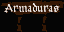
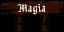
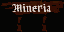
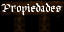
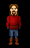
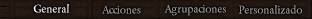

INTERACTUAR
A continuación se nombran algunas formas de interactuar:
| Usuarios |
A los usuarios los veras con un nick en color según su estado cuando pases el puntero sobre su personaje, a menos que hayas desactivado la vista de nombres con TECLA VER NOMBRES (N).
Al clickear un usuario podrás ver en la consola su nick, estado y una descripción, si es que el usuario ha seteado alguna con el comando /DESC. |
NPCs
(Criaturas, Comerciantes, etc.) |
Se lo denomina NPC a todo personaje o criatura controlado automáticamente por el Argentum Online.
Podrás interactuar con algunos NPCs comerciantes con diversos comandos y teclas, también podrás atacar a criaturas, todo esto lo encontrarás en otras secciones más específicas. |
Puertas
 |
Una puerta se abre haciéndole DOBLE CLICK o en el caso que esté cerrada con llave tenés que tener la correspondiente llave y usarla presionando TECLA USAR (U o DOBLE CLICK) sobre la llave, luego clickear sobre la puerta y así quedará abierta para que cualquier usuario pueda entrar. Para cerrarla se debe repetir el mismo proceso. |
Portales
 |
Pasando sobre ellos podrás transportarte a otro lugar, también podes clickearlos para saber a donde te llevará pero no todos te brindarán tal información.
La ubicación exacta del destino es variable, lo que significa que las coordenadas X e Y donde iremos al pasar el portal nunca serán iguales. Al cruzar el portal se tendrá la misma protección que al cruzar el mapa, para mayor información ver Sección: Entrenamiento.
|
Carteles
Tumbas
 |
Haciéndole DOBLE CLICK a un cartel o tumba podrás ver una breve descripción del mismo. |
árboles
Yacimientos
Fraguas
Yunques |
Si tenés equipada una herramienta adecuada podrás utilizar estos objetos para conseguir insumos o fabricar objetos. |
| Agua |
Si en algún momento ves agua (ya sea ríos o mares) podrás navegar o pescar en ella siempre y cuando sean aguas para la pesca o navegables. |
| Drag & Drop |
Se extiende el sistema para tirar objetos y comerciar.
El usuario puede tirar un objeto arrastrándolo (con click derecho) hacia la pantalla del juego. Al soltar el click, el ítem caerá, como máximo, a un slot del personaje.
En la interfaz de comercio seguro, el usuario puede utilizar el sistema de Drag & Drop para comerciar con otro personaje o NPC.
|
INTERACTUAR/COMERCIAR CON NPCS
La forma de pago en Argentum Online es a través de las monedas de oro. Ahora bien, para comerciar deberás dirigirte a la tienda en la que quieras comprar algo y acercarte al comerciante o NPC mejor dicho, entonces deberás clickear sobre él y hacer /COMERCIAR o DOBLE CLICK sobre el mismo. Entonces se te abrirá una ventana nueva muy fácil de usar, la cual está dividida en dos.
Del lado izquierdo encontrarás las opciones de compra y del lado derecho las opciones de venta. Para comprar o vender un ítem solo basta con clickearlo y pulsar sobre el correspondiente botón de compra o venta. Por último, abajo tenés un indicador de cantidad el cual podrás modificar para comprar o vender en cantidad.También el comerciante te proporciona el precio de venta total del ítem.
Aquí una breve descripción de los NPCs más importantes con los que podrás interactuar:
| CARTEL/NPC |
CARACTERíSTICAS |
 |
Tienda de provisiones, aquí se compra comida. |
 |
Herrería, lugar donde podes comprar armas, también hay un yunque y una fragua que servirá para el oficio de la herrería. |
|  |
Armería, acá se vende todo tipo de armaduras ya sea túnicas, escudos, cascos, etc. |
|  |
Magia, acá se venden todo tipo de items mágicos. |
 |
Pescadería, acá se vende todo lo relacionado con la pesca, por ej.. pescados, cañas, etc. |
 |
Carpintería, acá se vende todo lo relacionado con la madera, por ej.. leños, hachas, etc. |
|  |
Minería, acá se vende todo lo relacionado con la minería, por ej.. minerales, picos, etc. |
 |
Pociones. |
|  |
Venta de Propiedades, aquí es el lugar para comprar propiedades (casas) que se encuentren vacías. Hay que aclarar que las propiedades pueden estar habilitadas o no en el servidor.
Al comprar una propiedad obtendrás una LLAVE con la que podrás cerrar o abrir la puerta de tu propiedad cuando quieras, además podrás depositar items en el piso sin problema de que te los roben. |
 |
Taberna, aquí es donde se compran todas las bebidas. |
|  |
Mercader compra-todo, estos NPCs tienen la especialidad de que pueden comprar casi todo tipo de ítem. |
 |
Apostador, en él se puede apostar una suma de dinero, si ganan duplican la cantidad y si pierden el apostador se queda con el dinero apostado. Para apostar se hace así: /APOSTAR X donde x es reemplazado por un número del 1 al 5000. |
 |
Entrenador, a este NPC se le puede pedir que invoque criaturas con el comando /ENTRENAR. |
COMERCIO SEGURO ENTRE USUARIOS (TRUEQUE)
A través de este sistema, un usuario puede intercambiar items por oro o por items con otro usuario, sin necesidad de tener que tirar éstos al piso.
Para activarlo, hay que clickear sobre un usuario y tipear el comando /COMERCIAR, al hacerlo deberás esperar a que el otro usuario decida si quiere realizar algún tipo de intercambio con vos.
De ser así, aquel deberá repetir el mismo comando, entonces se abrirá una ventana donde quien inició el proceso debe ofrecer algo para comerciar. Luego el otro usuario deberá decidir si acepta la oferta y elegir qué le dará a cambio al otro personaje y finalmente, el primero deberá ver si le conviene aceptar lo que el otro le quiere dar a cambio de lo que él le había ofrecido al otro usuario, si acepta el intercambio estará realizado.
Con el nuevo sistema de trueque, los usuarios podrán comerciar entre si hasta 20 objetos y oro a la vez, bajo el mismo sistema: oferta mutua + aceptacion mutua de oferta.

MULTICONSOLAS
Existen distintos tipos de consolas en los que se visualizarán los eventos según su tipo:
Los tipos de mensajes que se ven en la consola son los siguientes:
- Administrativos (Mensajes de Servidor y Administradores).
- De clan
- De party
- De combate (Daños realizados y recibidos, ya sea a NPCs o personajes).
- De trabajo (al trabajar, iniciar trabajo, etc).
Las consolas serían:
- General (Todos los mensajes).
- Agrupaciones (Clan + party + administrativos).
- Acciones (combate + trabajo + administrativos).
- Custom/Personalizado (a elección del usuario acorde a la lista de mensajes)
Preview de las multiconsolas:

* Se puede navegar a través de ellas utilizando Ctrl+Tab.
* Cuando llega un mensaje a alguna consola en particular, se ilumina su pestaña si no es la que se encuentra activa.
|
|